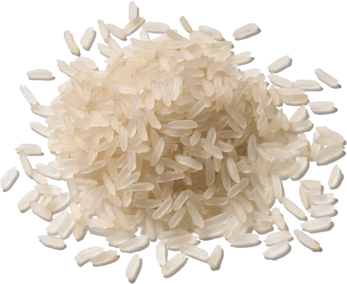
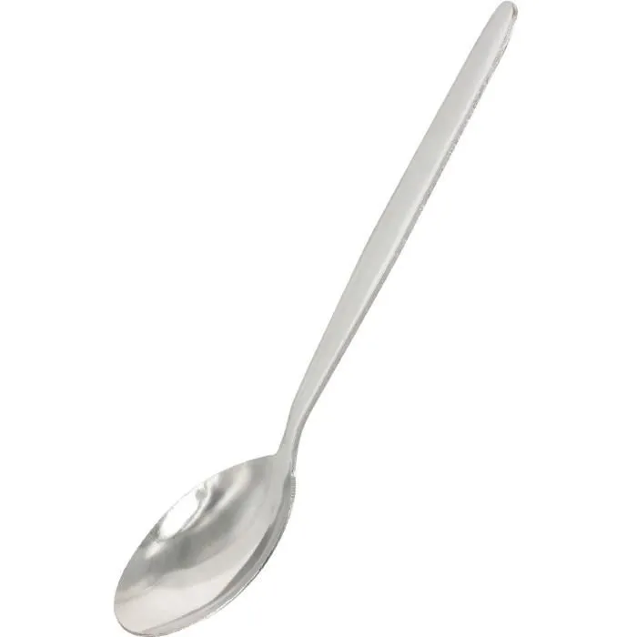
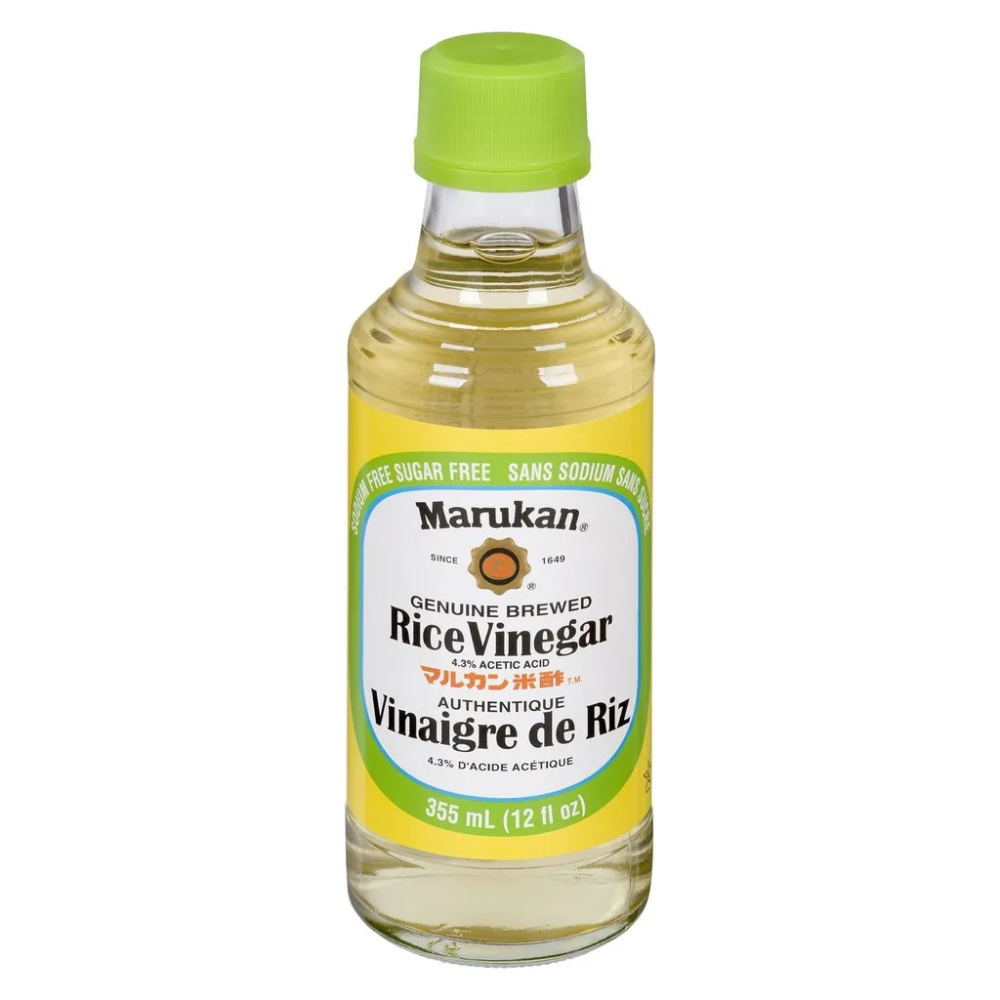
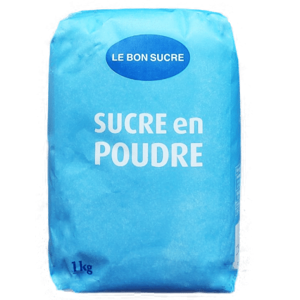
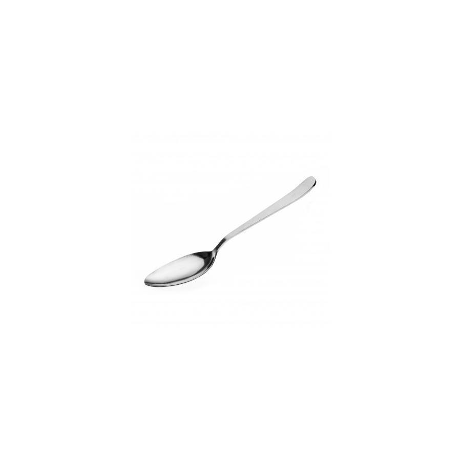
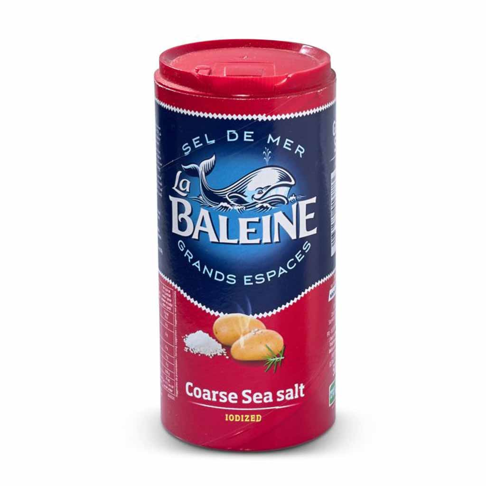
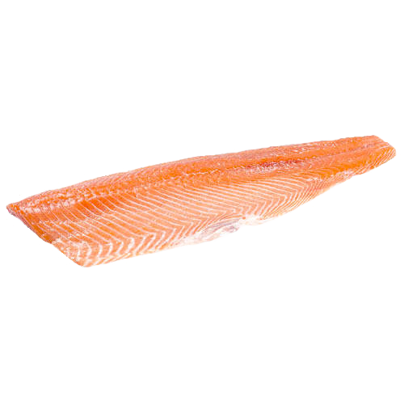

Liste des ingrédients nécéssaires pour la recette :
4.5 5Pour 20 sushis environ :
- 200g de riz rond
 - 2 cuillères à soupe de vinaigre de riz
  - 1 cuillère à soupe de sucre en poudre
 - 1 cuillère à café de sel de mer
  - 250g de poisson en filet
